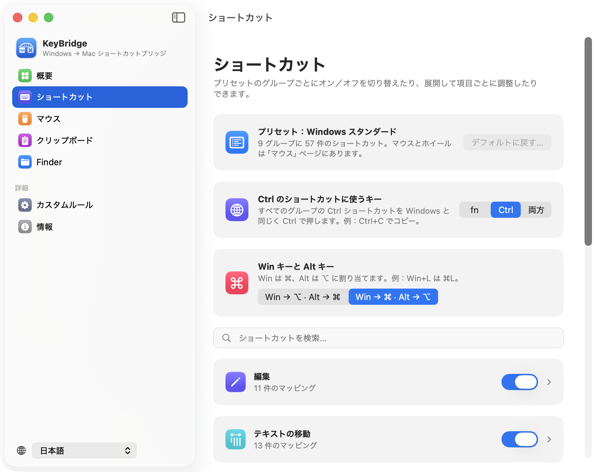
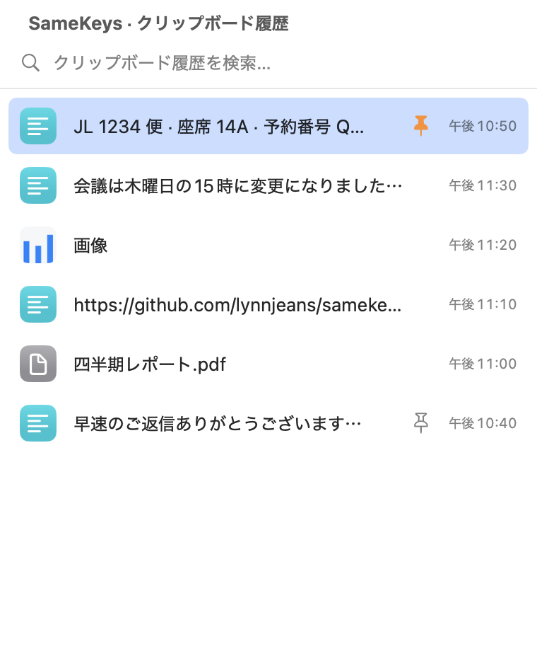

Windows から Mac に乗り換えたあなたへ
New Mac. Same Keys.
Windows のショートカットを、Mac でも。
SameKeys なら Ctrl+C でコピー、Win+V でクリップボード履歴、マウスホイールの向きも Windows と同じ。長年の指の記憶がそのまま使えます。
無料・オープンソース · macOS 14 以降

5 つのアプリを、ひとつに。
Mac で Windows の習慣を取り戻そうとすると、機能がいくつものアプリに分かれています。キーボード、マウス、クリップボード履歴……それぞれ探して、入れて、許可して、設定しなければなりません。SameKeys はそれをひとつにまとめ、初回起動から Windows の習慣に合わせて設定済みです。これが SameKeys を作ったきっかけです。
キーボードショートカット
Ctrl+C、Home と End、F2。Windows のショートカット 58 個が、起動してすぐ使えます。
マウスとホイール
サイドボタンで戻る・進む、fn か Ctrl + スクロールでページを拡大、ホイールの向きも Windows と同じに。
クリップボード履歴
Win+V でコピーした内容を表示。検索もピン留めもできます。
ウインドウの整列
Win+← のように、ウインドウを左半分・右半分に置いたり、画面いっぱいに広げたり。
Finder
Delete、F2、ファイルのカットとペースト、右クリックメニューから新規書類も。
指が覚えている操作を、そのまま。
毎日の操作の多くは、Mac では別のキーだったり、そもそも無かったりします。SameKeys は押したキーを Mac が期待するキーに置き換えます。
| Windows では | Mac では | SameKeys なら |
|---|---|---|
| Ctrl+C Ctrl+V Ctrl+Z | コピー・ペースト・取り消しは ⌘ | コピー、ペースト、取り消し、保存、検索… |
| Home End | ページの先頭・末尾へスクロール | 行頭・行末へ移動 |
| Ctrl+← Ctrl+→ | デスクトップを切り替え | 単語単位で移動 |
| マウスのサイドボタン | 何も起きない | 戻る・進む |
| Ctrl+スクロール | 画面全体を拡大、または何も起きない | ページをズーム（fn または Ctrl） |
| マウスホイールの向き | トラックパッドと一緒に逆向き | Windows と同じ向き、トラックパッドはそのまま |
| Finder での Delete F2 Enter | Enter で名前の変更、ほかは何も起きない | 削除、名前の変更、開く |
| Alt+Tab Alt+F4 | ⌘+Tab と ⌘+Q | アプリの切り替え、終了 |
| Ctrl+Shift+Esc | 何も起きない | アクティビティモニタを開く |
| PrtScn | 何も起きない | スクリーンショットをクリップボードへ |
| Win+← Win+→ Win+↑ | 別のキー：fn+Ctrl+矢印キー（macOS 15 以降） | ⌥+矢印キーで画面の半分か全体に |
| Win+V クリップボード履歴 | 機能が無い | 内蔵、⌥V で表示 |
乗り換えのために、細部まで。
どのキーボードでも
PC 用キーボードでも Mac のキーボードでも使えます。Windows と同じく Ctrl を押すことも、fn を代わりに使って Ctrl を Mac 本来のショートカットに残すことも、両方を使うこともできます。
ターミナルはそのまま
ターミナルや iTerm では、Ctrl+C は今まで通り実行中のプログラムを止めます。Ctrl が別の意味を持つ場所を SameKeys は知っています。
自由に調整
グループごとにオン・オフ、どの項目も別のショートカットを記録でき、独自のルールも作れます。すべてのアプリにも、特定のアプリだけにも。
マウスとトラックパッドは別々に
ホイールの向きとズームはマウスだけに適用。トラックパッドのジェスチャは Mac のままです。
小さく、静かに
メニューバーに常駐し、ワンクリックで一時停止。システム機能拡張もキーボードドライバも不要です。
あなたの言語で
English、简体中文、繁體中文、日本語、한국어、Deutsch、Français、Español、Português、Polski に対応。
Win+V のようなクリップボード履歴。
⌥V を押すと、最近コピーしたものがポインタのそばに表示されます。選べばそのままペースト。
- テキスト・画像・ファイルを検索できる
- よく使うものはピンで固定
- パスワードマネージャのパスワードは記録しない
- 履歴はこの Mac の中だけ、アップロードはしません。オンにするまでは無効です。

Finder を、エクスプローラーのように。
エクスプローラーで使っていたキーとメニューが、Finder でも、ファイルを開く・保存するダイアログでもそのまま使えます。
エクスプローラーのキー
Delete、F2、Enter で削除・名前の変更・開く。Backspace で一つ上のフォルダへ。
ファイルの切り取りと貼り付け
Ctrl+X のあと、別のフォルダで Ctrl+V を押すとファイルが移動します。
右クリックで新規作成
テキスト、Word、Excel、PowerPoint の書類を作ったり、パスをコピーしたり、そのフォルダをターミナルで開いたりできます。
パスを貼り付け
Finder やダイアログで Ctrl+Shift+G を押してパスをペーストすると、フォルダへ移動したりファイルを開いたりできます。エクスプローラーのアドレスバーと同じです。
開く・保存ダイアログ
Ctrl+G で Finder で開いているフォルダへ、Ctrl+Shift+G で最近使ったフォルダとお気に入りの一覧へ。
お気に入りのフォルダ
Finder の右クリックメニューからフォルダを SameKeys のお気に入りに追加すると、どのダイアログからもすぐに開けます。
2 つのアクセス権と、その理由。
キーの働きを変えるアプリには、macOS がこの 2 つの許可を求めます。
SameKeys はキー入力を記録しません。押されたキーは、置き換えるショートカットかどうかを判断するためだけに見て、そのまま通します。利用状況の収集も一切なく、コードはすべて公開されています。
SameKeys を入手。
macOS 14 以降 · 無料
Homebrew でもインストールできます：
brew install --cask lynnjeans/tap/samekeys- ディスクイメージを開いて SameKeys をダブルクリックすると、「アプリケーション」に自動でインストールされて開き、2 つのアクセス権の設定を順に案内します。
- Karabiner-Elements などを使っている場合は、SameKeys の使用中は終了してください。同じキーを取り合わないようにするためです。
よくある質問
Mac で Ctrl+C でコピーするには？
macOS ではコピーやペースト、ほとんどのショートカットに ⌘（Command）キーを使います。SameKeys を入れればすぐに有効になり、Ctrl+C、Ctrl+V、Ctrl+Z、Ctrl+S などが Windows と同じように働きます。ただしターミナルは例外で、Ctrl+C はプログラムを止めるために残します。
Mac で Home と End が行頭・行末に移動しないのはなぜ？
Mac の Home と End は書類の先頭・末尾へのスクロールで、行頭・行末は ⌘← と ⌘→ です。SameKeys が置き換えるので、Shift+Home、Shift+End、Ctrl+Home、Ctrl+End も Windows と同じように選択・移動できます。
Apple のキーボードでも使えますか？
はい。Control キーは PC の Ctrl と同じ位置にあります。Ctrl を Mac のショートカット用に残したい場合は fn を選び、fn+C でコピーします。
SameKeys は無料ですか？
無料です。GNU 一般公衆利用許諾書 第 3 版のオープンソースで、誰でもコードを読み、ビルドし、改良できます。役に立ったと感じたらスポンサーもできますが、必須ではありません。
Karabiner-Elements との違いは？
Karabiner-Elements は単一キーの変更やレイヤー作りに強い、高機能なツールです。SameKeys は「Mac で Windows の習慣を使う」ことだけに絞り、初回起動からすぐ使えて、マウスやホイールにも対応します。システムドライバも不要です。
SameKeys はインターネットに接続しますか？
アップデートの確認のために 1 日 1 回だけ接続します。この Web サイトにあるバージョン一覧を読み込むだけで、あなたや Mac に関する情報は送信しません。新しいバージョンは、あなたが選んだときにだけインストールされます。「情報」ページで「アップデートを自動的に確認」をオフにすれば、SameKeys がインターネットに接続することはありません。
Mac でファイルを切り取り・貼り付けするには？
Finder にはファイルの「切り取り」がなく、⌘C でコピーしてから ⌥⌘V で移動します。SameKeys を入れれば Ctrl+X と Ctrl+V でファイルを Windows と同じように移動でき、右クリックメニューから新規書類の作成やターミナルで開くこともできます。
Win+← のようにウインドウを画面の半分に寄せられますか？
できます。SameKeys では ⌥+← と ⌥+→ で最前面のウインドウを左右半分に、⌥+↑ で画面いっぱいに、⌥+↓ で最小化します。Mac のキーボードでは ⌥ が Windows キーの位置にあります。macOS 15 以降は fn+Ctrl+矢印キーも標準で使えます。